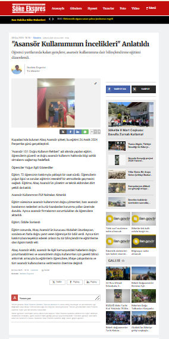
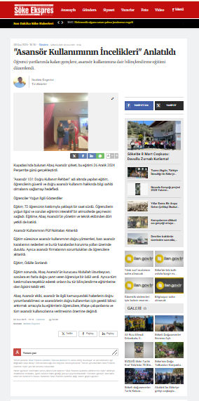

Sosyal Sorumluluk Projeleri
• Söke Fehime Kocagöz Devlet Hastanesi'nin 2 sedye, 2 yolcu ve 1 personel asansörünün sıfırdan montajını gerçekleştirmiş olan firmamız, asansörlerin periyodik aylık bakımlarını 10 yıl süresince bedelsiz üstlenmiştir.
• Söke Meslek Yüksek Okulu asansörünün ile ilgili ray ve kapı malzemelerinin montajını bedelsiz gerçekleştirmiştir.
• Firmamız, Milli Eğitim Bakanlığı Söke Halk Eğitim Merkezi işbirliği ile Söke’de ve tahminen Türkiye’de bir ilk olarak Bina Yöneticilerine, Bina Görevlilerine (Kapıcı), İtfaiyecilere yönelik “Asansörde Acil Durumlarda Uygulanacak olan Kurtarma ve Müdahale” operasyonlarını kapsayan 3 haftalık sertifika programı düzenlenmiştir.
Ayrıca, bu eğitimin kapsamına uygun olarak Söke Belediyesi İtfaiye Amirliğine acil durumlarda kullanabilmeleri amacıyla üçer adet askı halat kelepçesi (kabini askıya alabilmeleri için), üçer adet pimli ve üçgen gömmeli kapı kilit anahtar takımları (asansör kat kapılarını açan anahtarlar) hibe edilmiştir.
• Firmamız, 26 Aralık 2024 tarihinde Kuşadası Öğrenci Yurtlarında öğrencilerin güvenli ve doğru asansör kullanımı hakkında bilgi sahibi olmalarını sağlayan, aynı zamanda asansör ile ilgili kafalarına takılan her türlü soruyu sormalarına olanak veren bir saatlik süren bir seminer düzenlemiştir.
Seminer sonunda hazırlanan ve seminerin içeriği ile ilgili olan soru listesine en hızlı ve doğru cevabı veren öğrenciye Abaş Asansör sahibi Abdullah Uzunbeycan bir de ödül vererek, hem kalıcı bir anı paylaşılması hem de bilgilerin pekiştirilmesi amaçlanmıştır.

 
